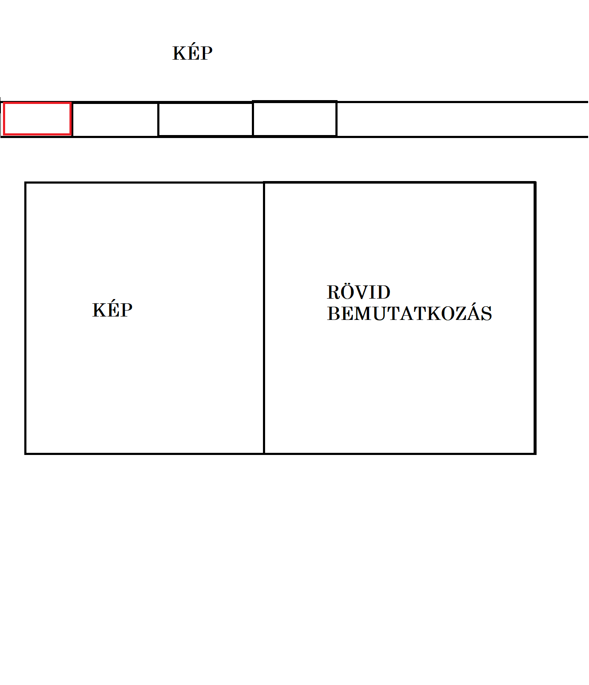
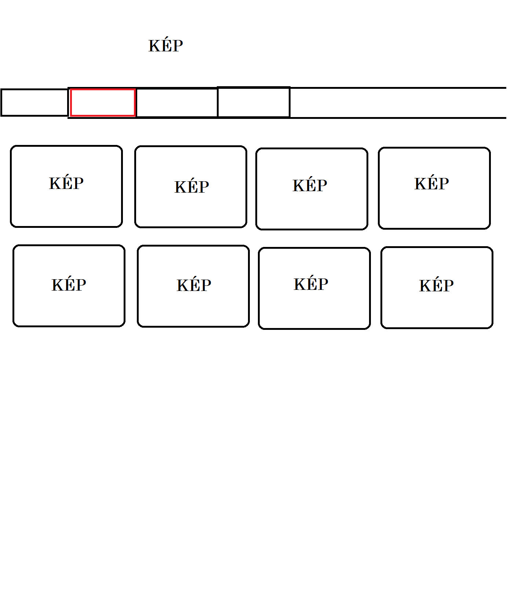
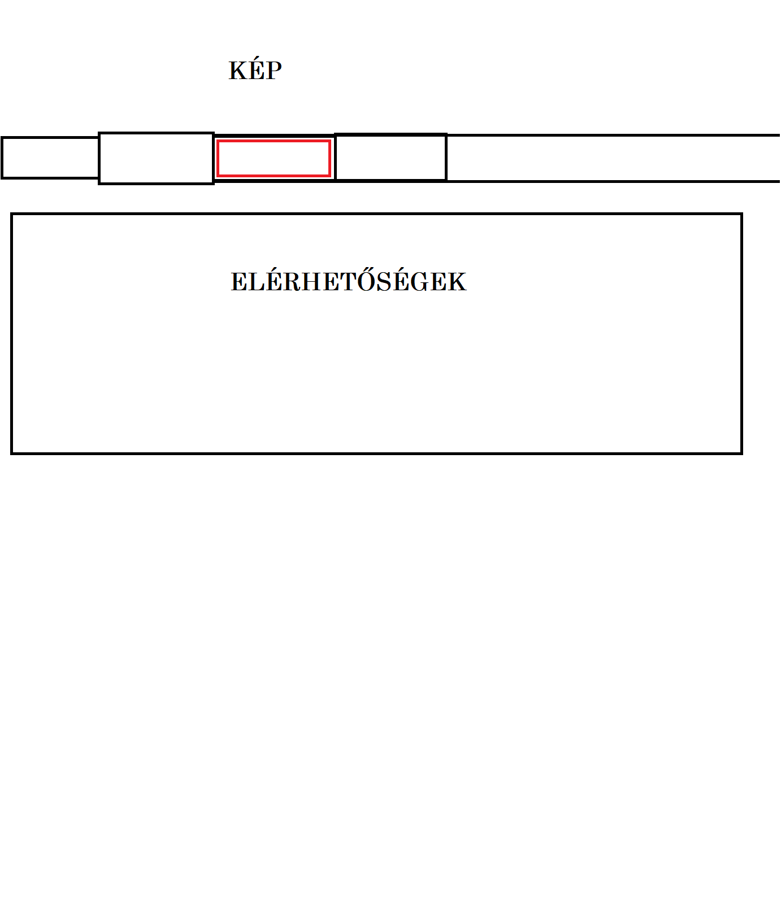

A weboldal kinézetét illentően elég konkrét elképzeléseim voltak. Fejben már megvolt a színvilág, tudtam hogy valami olyat szeretnék ami sötét és csak a fekete és fehér árnyalatiaval szerettem volna dolgozni, azt is tudtam még hogy szeretnék valami fejlécet benne egy vagány képpel. A struktúra is már a kezdetektől fogva a szemem előtt lebegett, valami olyasmit szerettem volna, mint Dr. Kiss Krisztina tanárnőé csak azért eggyel igényesebbet, de így is minimalistára fogva a dizájnt. Ezeket le is vázoltam Paintben:
Főoldal:

Galéria:

Elérhetőség:

Ahogy a végeredményből látszik nem nagyon tértem el a tervtől és a kódolás rész is viszonylag zökkenőmentesen ment az elejét leszámítva amikor vagy egy órát gondolkodtam hogy hogyan lehetne a fejlécben lévő képet úgy elhelyezni hogy a legesztétikusabb legyen, kitöltse az oldal egész szélességét de ezáltal függőlegesen se vegyen ki sok helyet a lapról és ne is legyen eltorzítva, végül arra jutottam hogy megvágom a képet és így lett a legkevésbé rossz az eredmény.
A weboldal elkészítéséhez felhasznált oldalak:
W3shools
Google Fonts